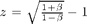

Measuring SLM using a quasar jet image at different epochs in time
Though I include step-by-step instructions here, the results are not shown. Try these commands by yourself and find out your own result.
Contents
Find the distance to 3C 279
Set up the constant parameters first:
The Hubble constant, in units of km/s/Mpc
H0 = 74.2;
the redshift of 3C 279 (redshift has no unit!)
z = 0.5362;
the speed of light, in units of m/s
c = 3e8;
The receding velocity can be calculated from the redshift as and . Doing some calculations you'll solve v_rec:
v_rec = (((1+z)^2-1)/((1+z)^2+1))*c
v_rec = 1.2142e+08
This is in units of m/s. To calculate the distance using the Hubble constant, we need to divide v by 1000 to get v in units of km/s. Then we can get D in Mpc:
D = (v_rec/1000) /H0
D = 1.6364e+03
The scale between angle on the sky and the distance
If you are not familiar with angular diameter, check the wiki page:
The real "ruler" on the sky at distance D is the angle we observed times the distance D, while the angle is measured in rad. The conversion factor from deg to rad is
deg2rad = (2*pi)/360;
Therefore, 1 arcsec = 1 deg / (60*60) is (in units of rad)
asc = deg2rad / (60*60);
Therefore the conversion factor between 1 arcsec on sky and distance at 3C 279 (in pc) is (recall that our D is in units of Mpc = 1e6 pc)
as2pc = asc * (D*1e6)
as2pc = 7.9337e+03
Apparent velocity of the knot
Using the image, I estimate the brightest knot moved from about 2 milliarcsec away from the central source to about 2.5 milliarcsec in 2.7 years. The velocity in the sky is thus
vSky = (2.5 - 2)/2.7;
This is in units of milliarcsec / years, which is not very useful. We want to convert it to our familiar unit system m/s.
First, convert the time unit from year to second:
yr2s = 31556926;
so the velocity in milliarcsec/second is
vma = vSky / yr2s
vma = 5.8683e-09
and in arcsec/second:
va = vma*1e-3
va = 5.8683e-12
Then let's convert milliarcsec to the real ruler on the sky, pc:
vpc = va*as2pc
vpc = 4.6557e-08
And the conversion factor from pc to meters: 1*pc* = 3.086e16 m
pc2m = 3.086e16;
Then we have the measured velocity in m / s:
v = vpc*pc2m
v = 1.4368e+09
This velocity is much greater than the speed of light!
The true velocity
But, we know this is not true velocity. If we assume an inclination angle of the jet along which the knot moves to the line of sight which maximizes apparent velocity, then we get a lower limit on the actual velocity of the knot in the rest frame of the Quasar:
beta = 1/sqrt(1+1/(v/c)^2)
beta =
0.9789
which means v_real is
v_real = beta*c
v_real = 2.9367e+08
very close, but smaller to the speed of light!